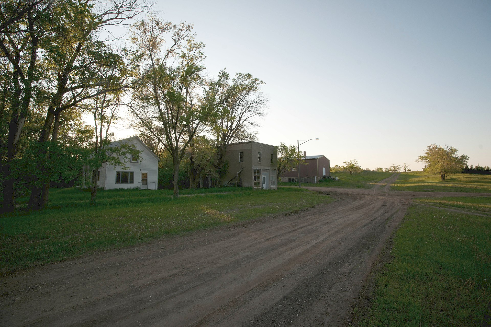

 Title: Leith, North Dakota 6-12-2009
Author: Andrew Filer
Source: Wikimedia Commons
URL: https://commons.wikimedia.org/wiki/File:Leith,_North_Dakota_6-12-2009.jpg
Leith
Leith is a small town, it has a sad history.
- Leith has a majority white supremicist population, it's population is very small.
- This racism was documented in the documentary "Welcome to leith"
- It is very poor
I wouldn't recommend going to Leith, but if you wanted to you would experience.
- a Struggling community
- Racists and turmoil
- Winter activities such as skiing or sledding
| City |
Population |
US Rank |
Year city was made |
region |
classification |
average income |
| Fargo |
131,444 |
216th |
1871 |
Eastern border of State |
Urban |
44,444 |
| Bismarck |
74,445 |
500th |
1872 |
central ND |
Urban |
39,000 |
| Leith |
28 |
Too low to count |
1910 |
Southern part of state |
Rural |
12,000 |
United States Census Bureau. Archived from the original on July 22, 2020
Enter your contact info here